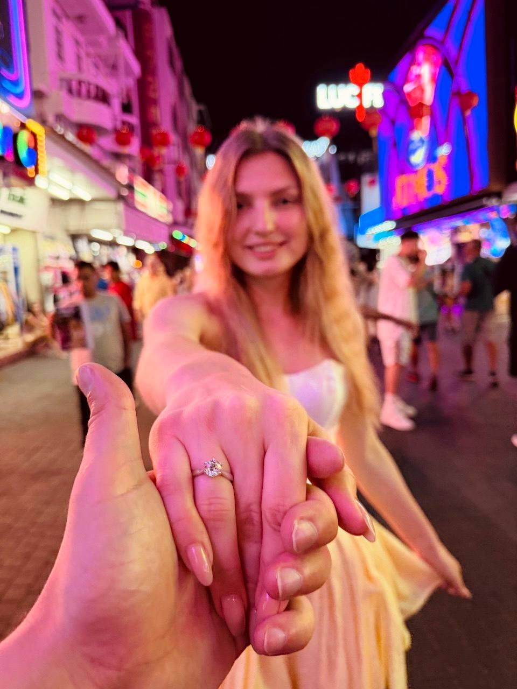
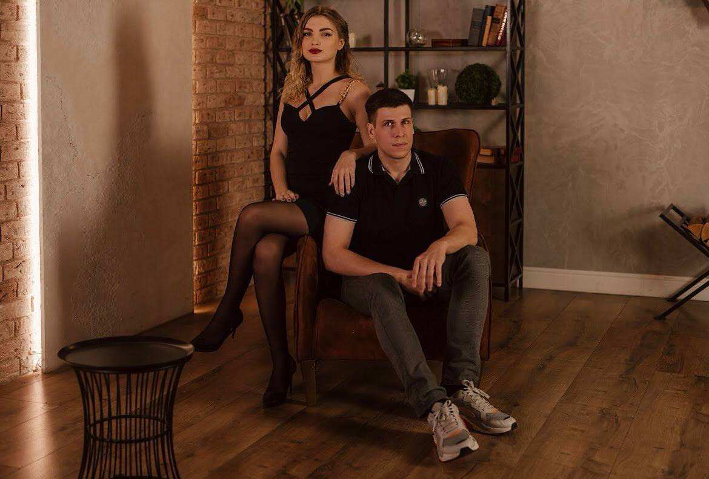
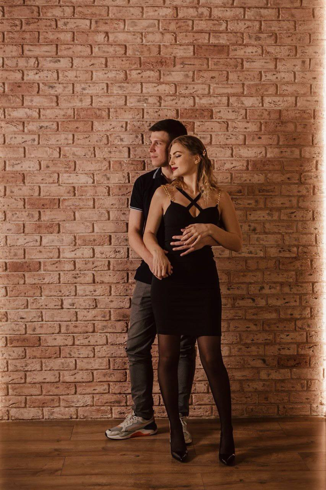
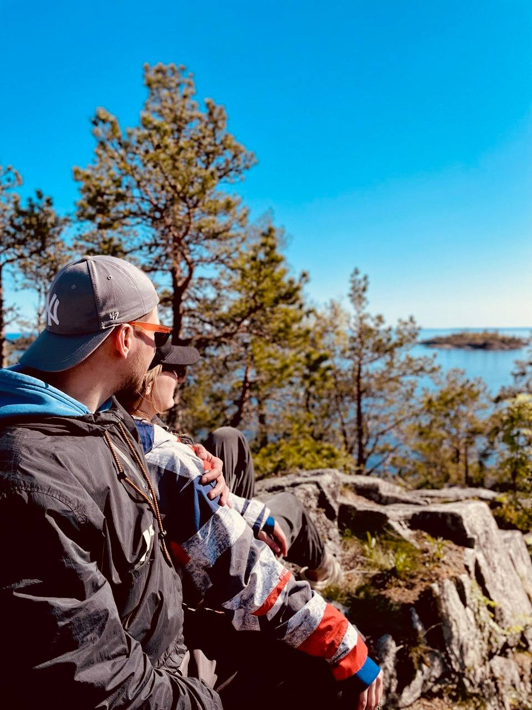
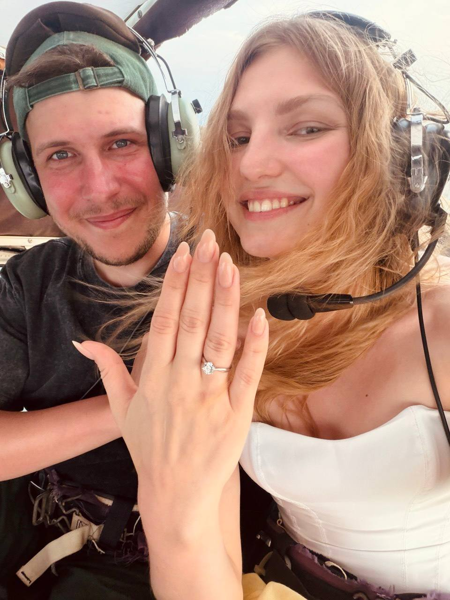

Вариант 11
Фоновый кадр + коллаж
Одна фотография становится атмосферным фоном, остальные четыре собираются в крупную нижнюю галерею.

Наша история
Пять кадров в одном большом блоке




Вариант 12
Разворот фотоальбома
Две “страницы” с крупными фото. Подходит, если хочется сохранить ощущение бумажного альбома.
Вариант 13
Фотографии на несколько экранов
Блок становится мини-историей: при скролле гости видят крупные пары фотографий, а финальный кадр закрывает секцию.
Экран 01
Экран 02
Финальный кадр
Вариант 14
Темный премиальный фон
Фотографии становятся ярче на оливковом фоне. Хорошо рифмуется с таймером.
Пять любимых моментов
Более контрастный и вечерний фотоблок
Вариант 15
Большая асимметричная мозаика
Все пять фото остаются в одном коллаже, но сетка уже не выглядит как ряд маленьких карточек.